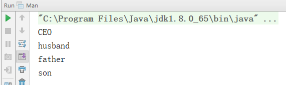
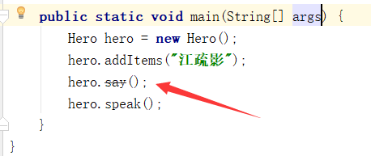
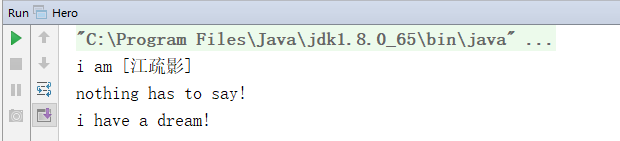
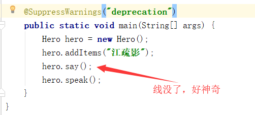
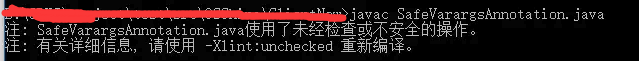
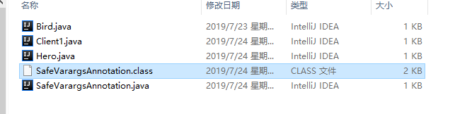
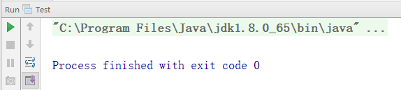
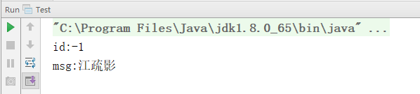
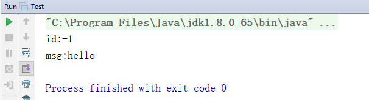
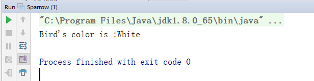

<!DOCTYPE html>
<html>
<head><meta name="generator" content="Hexo 3.8.0">
  <meta charset="utf-8">
  <meta name="baidu-site-verification" content="L6Lm9d5Crl">
  
  
  
  
  <title>浅谈java注解 | Jason Blog 主页</title>
  <meta name="viewport" content="width=device-width, initial-scale=1, maximum-scale=1">
  <meta name="description" content="浅谈java注解Java注解用于为Java代码提供元数据。 元数据是指用来描述数据的数据，通俗一点，就是描述代码间关系，或者代码与其它资源（例如数据库表）之间内在联系的数据。在一些技术框架中，如Struts、hibernate就不知不觉用到了元数据。对于Struts来说，元数据指的是struts-config.xml；对hibernate来说就是hbm文件。以上阐述的几种元数据都是基于xml文件的">
<meta property="og:type" content="article">
<meta property="og:title" content="浅谈java注解">
<meta property="og:url" content="http://yoursite.com/2019/07/27/浅谈java注解/index.html">
<meta property="og:site_name" content="Jason Blog 主页">
<meta property="og:description" content="浅谈java注解Java注解用于为Java代码提供元数据。 元数据是指用来描述数据的数据，通俗一点，就是描述代码间关系，或者代码与其它资源（例如数据库表）之间内在联系的数据。在一些技术框架中，如Struts、hibernate就不知不觉用到了元数据。对于Struts来说，元数据指的是struts-config.xml；对hibernate来说就是hbm文件。以上阐述的几种元数据都是基于xml文件的">
<meta property="og:locale" content="zh-CN">
<meta property="og:image" content="http://yoursite.com/2019/07/27/浅谈java注解/0b01226f07eb84fe2900ea5396e4e5b0352.jpg">
<meta property="og:image" content="http://yoursite.com/2019/07/27/浅谈java注解/04619c177c777d34a126866fe87da51b194.jpg">
<meta property="og:image" content="http://yoursite.com/2019/07/27/浅谈java注解/2a24de094d4921716193df5e77ea48ebeaa.jpg">
<meta property="og:image" content="http://yoursite.com/2019/07/27/浅谈java注解/fc68df7f0c4a34b8b171a88935b629286ff.jpg">
<meta property="og:image" content="http://yoursite.com/2019/07/27/浅谈java注解/b8f1bd87a92c0274c55da1bf961d0e9b883.jpg">
<meta property="og:image" content="http://yoursite.com/2019/07/27/浅谈java注解/c5738752559329466758b7025dfcbe42935.jpg">
<meta property="og:image" content="http://yoursite.com/2019/07/27/浅谈java注解/d684fc84462444ed585655164952f38d782.jpg">
<meta property="og:image" content="http://yoursite.com/2019/07/27/浅谈java注解/6af56fc8f5ccef20686ffcbb134175f50bb.jpg">
<meta property="og:image" content="http://yoursite.com/2019/07/27/浅谈java注解/94815e142cd6ce6281214427e3650c8d78f.jpg">
<meta property="og:image" content="http://yoursite.com/2019/07/27/浅谈java注解/66f973e517fa53b4c7a6b9c1e874044f748.jpg">
<meta property="og:image" content="http://yoursite.com/2019/07/27/浅谈java注解/3fb20b6a829873096273cc7f99f74d085a4.jpg">
<meta property="og:updated_time" content="2019-07-27T07:59:48.400Z">
<meta name="twitter:card" content="summary">
<meta name="twitter:title" content="浅谈java注解">
<meta name="twitter:description" content="浅谈java注解Java注解用于为Java代码提供元数据。 元数据是指用来描述数据的数据，通俗一点，就是描述代码间关系，或者代码与其它资源（例如数据库表）之间内在联系的数据。在一些技术框架中，如Struts、hibernate就不知不觉用到了元数据。对于Struts来说，元数据指的是struts-config.xml；对hibernate来说就是hbm文件。以上阐述的几种元数据都是基于xml文件的">
<meta name="twitter:image" content="http://yoursite.com/2019/07/27/浅谈java注解/0b01226f07eb84fe2900ea5396e4e5b0352.jpg">
  
    <link rel="alternative" href="/atom.xml" title="Jason Blog 主页" type="application/atom+xml">
  
  
    <link rel="icon" href="/img/favicon.png">
  
  
  <link rel="stylesheet" href="//cdn.bootcss.com/animate.css/3.5.0/animate.min.css">
  
  <link rel="stylesheet" href="/css/style.css">
  <link rel="stylesheet" href="/font-awesome/css/font-awesome.min.css">
  <link rel="apple-touch-icon" href="/apple-touch-icon.png">
  
  
      <link rel="stylesheet" href="/fancybox/jquery.fancybox.css">
  
  <!-- 加载特效 -->
    <script src="/js/pace.js"></script>
    <link href="/css/pace/pace-theme-flash.css" rel="stylesheet">
  <script>
      var yiliaConfig = {
          fancybox: true,
          animate: true,
          isHome: false,
          isPost: true,
          isArchive: false,
          isTag: false,
          isCategory: false,
          open_in_new: false
      }
  </script>
</head></html>
<body>
  <div id="container">
    <div class="left-col">
    <div class="overlay"></div>
<div class="intrude-less">
    <header id="header" class="inner">
        
<script src="https://7.url.cn/edu/jslib/comb/require-2.1.6,jquery-1.9.1.min.js"></script>

        <a href="/" class="profilepic">
            
            
            
        </a>
        <hgroup>
          <h1 class="header-author"><a href="/">Jason</a></h1>
        </hgroup>
        
        
            <form>
                <input type="text" class="st-default-search-input search" id="local-search-input" placeholder="搜索一下" autocomplete="off">
            </form>
            <div id="local-search-result"></div>
        
        
            <script type="text/javascript">
                (function() {
                    'use strict';
                    function getMatchData(keyword, data) {
                        var matchData = [];
                        for(var i =0;i<data.length;i++){
                            if(data[i].title.toLowerCase().indexOf(keyword)>=0) 
                                matchData.push(data[i])
                        }
                        return matchData;
                    }
                    var $input = $('#local-search-input');
                    var $resultContent = $('#local-search-result');
                    $input.keyup(function(){
                        $.ajax({
                            url: '/search.json',
                            dataType: "json",
                            success: function( json ) {
                                var str='<ul class=\"search-result-list\">';                
                                var keyword = $input.val().trim().toLowerCase();
                                $resultContent.innerHTML = "";
                                if ($input.val().trim().length <= 0) {
                                    $resultContent.empty();
                                    $('#switch-area').show();
                                    return;
                                }
                                var results = getMatchData(keyword, json);
                                if(results.length === 0){
                                    $resultContent.empty();
                                    $('#switch-area').show();
                                    return;
                                } 
                                for(var i =0; i<results.length; i++){
                                    str += "<li><a href='"+ results[i].url +"' class='search-result-title'>"+ results[i].title +"</a></li>";
                                }
                                str += "</ul>";
                                $resultContent.empty();
                                $resultContent.append(str);
                                $('#switch-area').hide();
                            }
                        });
                    });
                })();
            </script>
        
        
            <div id="switch-btn" class="switch-btn">
                <div class="icon">
                    <div class="icon-ctn">
                        <div class="icon-wrap icon-house" data-idx="0">
                            <div class="birdhouse"></div>
                            <div class="birdhouse_holes"></div>
                        </div>
                        <div class="icon-wrap icon-ribbon hide" data-idx="1">
                            <div class="ribbon"></div>
                        </div>
                        
                        <div class="icon-wrap icon-link hide" data-idx="2">
                            <div class="loopback_l"></div>
                            <div class="loopback_r"></div>
                        </div>
                        
                        
                        <div class="icon-wrap icon-me hide" data-idx="3">
                            <div class="user"></div>
                            <div class="shoulder"></div>
                        </div>
                        
                    </div>
                </div>
                <div class="tips-box hide">
                    <div class="tips-arrow"></div>
                    <ul class="tips-inner">
                        <li>菜单</li>
                        <li>标签</li>
                        
                        <li>友情链接</li>
                        
                        
                        <li>关于我</li>
                        
                    </ul>
                </div>
            </div>
        
        <div id="switch-area" class="switch-area">
            <div class="switch-wrap">
                <section class="switch-part switch-part1">
                    <nav class="header-menu">
                        <ul>
                        
                            <li><a href="/archives/">所有文章</a></li>
                        
                            <li><a href="/categories/开发工具/">玩转开发工具</a></li>
                        
                            <li><a href="/categories/digital">玩转数码</a></li>
                        
                            <li><a href="/categories/algorithm">算法学习</a></li>
                        
                            <li><a href="/about/">关于我</a></li>
                        
                        </ul>
                    </nav>
                    <nav class="header-nav">
                        <ul class="social">
                            
                                <a class="fl github" target="_blank" href="https://github.com/JasonWang0911/" title="github">github</a>
                            
                                <a class="fl rss" target="_blank" href="/atom.xml" title="rss">rss</a>
                            
                        </ul>
                    </nav>
                </section>
                
                <section class="switch-part switch-part2">
                    <div class="widget tagcloud" id="js-tagcloud">
                        
                    </div>
                </section>
                
                
                <section class="switch-part switch-part3">
                    <div id="js-friends">
                    
                      <a target="_blank" class="main-nav-link switch-friends-link" href="http://blog.csdn.net/baidu_21483933">csdn</a>
                    
                      <a target="_blank" class="main-nav-link switch-friends-link" href="https://segmentfault.com/blog/maocg_web">segmentfault</a>
                    
                      <a target="_blank" class="main-nav-link switch-friends-link" href="http://www.jianshu.com/users/eb37ef89c746/latest_articles">简书</a>
                    
                    </div>
                </section>
                
                
                
                <section class="switch-part switch-part4">
                
                    <div id="js-aboutme">爱动漫,爱游戏,爱编程,爱运动,爱的太多了!</div>
                </section>
                
            </div>
        </div>
    </header>
</div>

    </div>
    <div class="mid-col">
      <nav id="mobile-nav">
      <div class="overlay">
          <div class="slider-trigger"></div>
          <h1 class="header-author js-mobile-header hide"><a href="/" title="回到主页">Jason</a></h1>
      </div>
    <div class="intrude-less">
        <header id="header" class="inner">
            <a href="/" class="profilepic">
                
                    
                
            </a>
            <hgroup>
              <h1 class="header-author"><a href="/" title="回到主页">Jason</a></h1>
            </hgroup>
            
            <nav class="header-menu">
                <ul>
                
                    <li><a href="/archives/">所有文章</a></li>
                
                    <li><a href="/categories/开发工具/">玩转开发工具</a></li>
                
                    <li><a href="/categories/digital">玩转数码</a></li>
                
                    <li><a href="/categories/algorithm">算法学习</a></li>
                
                    <li><a href="/about/">关于我</a></li>
                
                <div class="clearfix"></div>
                </ul>
            </nav>
            <nav class="header-nav">
                <div class="social">
                    
                        <a class="github" target="_blank" href="https://github.com/JasonWang0911/" title="github">github</a>
                    
                        <a class="rss" target="_blank" href="/atom.xml" title="rss">rss</a>
                    
                </div>
            </nav>
        </header>
    </div>
</nav>
      <div class="body-wrap"><article id="post-浅谈java注解" class="article article-type-post" itemscope itemprop="blogPost">
  
    <div class="article-meta">
      <a href="/2019/07/27/浅谈java注解/" class="article-date">
      <time datetime="2019-07-27T07:24:23.000Z" itemprop="datePublished">2019-07-27</time>
</a>

    </div>
  
  <div class="article-inner">
    
      <input type="hidden" class="isFancy">
    
    
      <header class="article-header">
        
  
    <h1 class="article-title" itemprop="name">
      浅谈java注解
    </h1>
  


      </header>
      
      <div class="article-info article-info-post">
        

        
        <div class="clearfix"></div>
      </div>
      
    
    <div class="article-entry" itemprop="articleBody">
      
          
        <h1 id="浅谈java注解"><a href="#浅谈java注解" class="headerlink" title="浅谈java注解"></a>浅谈java注解</h1><p>Java注解用于为Java代码提供元数据。</p>
<p>元数据是指用来描述数据的数据，通俗一点，就是描述代码间关系，或者代码与其它资源（例如数据库表）之间内在联系的数据。在一些技术框架中，如Struts、hibernate就不知不觉用到了元数据。对于Struts来说，元数据指的是struts-config.xml；对hibernate来说就是hbm文件。以上阐述的几种元数据都是基于xml文件的或者其他形式的单独配置文件。这样表示有些不便之处。1、与被描述的文件分离，不利于一致性的维护；2、所有这样的文件都是ASCII文件，没有显式的类型支持。基于元数据的广泛使用，JDK5.0引入了Annotation的概念来描述元数据。在Java中，元数据以标签的形式存在于Java代码中，元数据标签的存在并不影响程序代码的编译和执行。简而言之，言而总之，注解就是标签的意思。</p>
<h2 id="一、如何创建注解？"><a href="#一、如何创建注解？" class="headerlink" title="一、如何创建注解？"></a>一、如何创建注解？</h2><p>JDK5.0出来后，Java语言中就有了四种类型，即类class、枚举enum、接口interface、注解@interface，它们处于同一级别，Java就是通过注解来表示元数据的。</p>
<figure class="highlight java"><table><tr><td class="gutter"><pre><span class="line">1</span><br><span class="line">2</span><br><span class="line">3</span><br><span class="line">4</span><br><span class="line">5</span><br><span class="line">6</span><br><span class="line">7</span><br><span class="line">8</span><br><span class="line">9</span><br><span class="line">10</span><br></pre></td><td class="code"><pre><span class="line"></span><br><span class="line"><span class="keyword">package</span> OSChina.ClientNew;</span><br><span class="line"></span><br><span class="line"><span class="keyword">public</span> <span class="meta">@interface</span> MyAnnotation &#123;</span><br><span class="line">    <span class="comment">// 定义公共的final静态属性</span></span><br><span class="line">    <span class="keyword">int</span> age = <span class="number">25</span>;</span><br><span class="line"></span><br><span class="line">    <span class="comment">// 定义公共的抽象方法</span></span><br><span class="line">    <span class="function">String <span class="title">name</span><span class="params">()</span></span>;</span><br><span class="line">&#125;</span><br></pre></td></tr></table></figure>
<p>Java注解本质上就是接口，是继承了Annotation接口的接口。</p>
<h2 id="二、元注解"><a href="#二、元注解" class="headerlink" title="二、元注解"></a>二、元注解</h2><p>元注解是可以注解到注解上的注解，或者说元注解是一种基本注解，它能够应用到其它的注解上面。</p>
<p>元标签有 @Retention、@Documented、@Target、@Inherited、@Repeatable 5 种。</p>
<h4 id="1、-Retention"><a href="#1、-Retention" class="headerlink" title="1、@Retention"></a>1、@Retention</h4><p>Retention，中文释义保留期的意思</p>
<p>当@Retention应用到注解上的时候，它解释说明了这个注解的生命周期。</p>
<ul>
<li>RetentionPolicy.SOURCE 注解只在源码阶段保留，在编译器进行编译时它将被丢弃忽视。</li>
<li>RetentionPolicy.CLASS 注解只被保留到编译进行的时候，它并不会被加载到JVM中。</li>
<li>RetentionPolicy.RUNTIME 注解可以保留到程序运行的时候，它会被加载到JVM中。<h4 id="2、-Documented"><a href="#2、-Documented" class="headerlink" title="2、@Documented"></a>2、@Documented</h4></li>
</ul>
<p>顾名思义，这个元注解肯定和文档有关。它的作用是能够将注解中的元素包含到Javadoc中去。</p>
<h4 id="3、-Target"><a href="#3、-Target" class="headerlink" title="3、@Target"></a>3、@Target</h4><p>标明注解运用的地方。</p>
<ul>
<li>ElementType.ANNOTATION_TYPE 可以给一个注解进行注解</li>
<li>ElementType.CONSTRUCTOR 可以给构造方法进行注解</li>
<li>ElementType.FIELD 可以给属性进行注解</li>
<li>ElementType.LOCAL_VARIABLE 可以给局部变量进行注解</li>
<li>ElementType.METHOD 可以给方法进行注解</li>
<li>ElementType.PACKAGE 可以给一个包进行注解</li>
<li>ElementType.PARAMETER 可以给一个方法内的参数进行注解</li>
<li>ElementType.TYPE 可以给一个类型进行注解，比如类、接口、枚举</li>
</ul>
<h4 id="4、-Inherited"><a href="#4、-Inherited" class="headerlink" title="4、@Inherited"></a>4、@Inherited</h4><p>lnherited是继承的意思。</p>
<p>如果一个超类被@Inherited注解过的注解进行注解的话，那么如果它的子类没有被任何注解应用的话，那么这个子类就继承了超类的注解。</p>
<p>代码实例</p>
<figure class="highlight java"><table><tr><td class="gutter"><pre><span class="line">1</span><br><span class="line">2</span><br><span class="line">3</span><br><span class="line">4</span><br><span class="line">5</span><br><span class="line">6</span><br><span class="line">7</span><br><span class="line">8</span><br><span class="line">9</span><br><span class="line">10</span><br><span class="line">11</span><br><span class="line">12</span><br><span class="line">13</span><br><span class="line">14</span><br><span class="line">15</span><br><span class="line">16</span><br><span class="line">17</span><br><span class="line">18</span><br><span class="line">19</span><br><span class="line">20</span><br></pre></td><td class="code"><pre><span class="line"></span><br><span class="line"><span class="keyword">package</span> OSChina.ClientNew;</span><br><span class="line"></span><br><span class="line"><span class="keyword">import</span> java.lang.annotation.ElementType;</span><br><span class="line"><span class="keyword">import</span> java.lang.annotation.Inherited;</span><br><span class="line"><span class="keyword">import</span> java.lang.annotation.Retention;</span><br><span class="line"><span class="keyword">import</span> java.lang.annotation.RetentionPolicy;</span><br><span class="line"><span class="keyword">import</span> java.lang.annotation.Target;</span><br><span class="line"></span><br><span class="line"><span class="meta">@Retention</span>(RetentionPolicy.RUNTIME)<span class="comment">//注解可以保留到程序运行时，加载到JVM中</span></span><br><span class="line"><span class="meta">@Target</span>(ElementType.TYPE)<span class="comment">//给一个类型进行注解，比如类、接口、枚举</span></span><br><span class="line"><span class="meta">@Inherited</span> <span class="comment">//子类继承父类时，注解会起作用</span></span><br><span class="line"><span class="keyword">public</span> <span class="meta">@interface</span> Desc &#123;</span><br><span class="line">    <span class="keyword">enum</span> Color &#123;</span><br><span class="line">        White, Grayish, Yellow</span><br><span class="line">    &#125;</span><br><span class="line"></span><br><span class="line">    <span class="comment">// 默认颜色是白色的</span></span><br><span class="line">    <span class="function">Color <span class="title">c</span><span class="params">()</span> <span class="keyword">default</span> Color.White</span>;</span><br><span class="line">&#125;</span><br></pre></td></tr></table></figure>
<h4 id="5、-Repeatable"><a href="#5、-Repeatable" class="headerlink" title="5、@Repeatable"></a>5、@Repeatable</h4><p>Repeatable 自然是可重复的意思。@Repeatable 是 Java 1.8 才加进来的，所以算是一个新的特性。</p>
<p>什么样的注解会多次应用呢？通常是注解的值可以同时取多个。</p>
<p>在生活中一个人往往是具有多种身份，如果我把每种身份当成一种注解该如何使用？？？</p>
<p>先声明一个Persons类用来包含所有的身份</p>
<figure class="highlight java"><table><tr><td class="gutter"><pre><span class="line">1</span><br><span class="line">2</span><br><span class="line">3</span><br><span class="line">4</span><br><span class="line">5</span><br><span class="line">6</span><br></pre></td><td class="code"><pre><span class="line"></span><br><span class="line"><span class="meta">@Target</span>(ElementType.TYPE)  </span><br><span class="line"><span class="meta">@Retention</span>(RetentionPolicy.RUNTIME)</span><br><span class="line"><span class="keyword">public</span> <span class="meta">@interface</span> Persons &#123;</span><br><span class="line">	Person[] value();</span><br><span class="line">&#125;</span><br></pre></td></tr></table></figure>
<p>这里@Target是声明Persons注解的作用范围，参数ElementType.Type代表可以给一个类型进行注解，比如类，接口，枚举。</p>
<p>@Retention是注解的有效时间，RetentionPolicy.RUNTIME是指程序运行的时候。</p>
<p>Person注解：</p>
<figure class="highlight java"><table><tr><td class="gutter"><pre><span class="line">1</span><br><span class="line">2</span><br><span class="line">3</span><br><span class="line">4</span><br><span class="line">5</span><br></pre></td><td class="code"><pre><span class="line"></span><br><span class="line"><span class="meta">@Repeatable</span>(Persons.class)</span><br><span class="line"><span class="keyword">public</span> <span class="meta">@interface</span> Person&#123;</span><br><span class="line">	<span class="function">String <span class="title">role</span><span class="params">()</span> <span class="keyword">default</span> ""</span>;</span><br><span class="line">&#125;</span><br></pre></td></tr></table></figure>
<p>@Repeatable括号内的就相当于用来保存该注解内容的容器。</p>
<p>声明一个Man类，给该类加上一些身份。</p>
<figure class="highlight java"><table><tr><td class="gutter"><pre><span class="line">1</span><br><span class="line">2</span><br><span class="line">3</span><br><span class="line">4</span><br><span class="line">5</span><br><span class="line">6</span><br><span class="line">7</span><br><span class="line">8</span><br></pre></td><td class="code"><pre><span class="line"></span><br><span class="line"><span class="meta">@Person</span>(role=<span class="string">"CEO"</span>)</span><br><span class="line"><span class="meta">@Person</span>(role=<span class="string">"husband"</span>)</span><br><span class="line"><span class="meta">@Person</span>(role=<span class="string">"father"</span>)</span><br><span class="line"><span class="meta">@Person</span>(role=<span class="string">"son"</span>)</span><br><span class="line"><span class="keyword">public</span> <span class="class"><span class="keyword">class</span> <span class="title">Man</span> </span>&#123;</span><br><span class="line">	String name=<span class="string">""</span>;</span><br><span class="line">&#125;</span><br></pre></td></tr></table></figure>
<p>在主方法中访问该注解：</p>
<figure class="highlight java"><table><tr><td class="gutter"><pre><span class="line">1</span><br><span class="line">2</span><br><span class="line">3</span><br><span class="line">4</span><br><span class="line">5</span><br><span class="line">6</span><br><span class="line">7</span><br><span class="line">8</span><br><span class="line">9</span><br></pre></td><td class="code"><pre><span class="line"></span><br><span class="line"><span class="function"><span class="keyword">public</span> <span class="keyword">static</span> <span class="keyword">void</span> <span class="title">main</span><span class="params">(String[] args)</span> </span>&#123;</span><br><span class="line">    Annotation[] annotations = Man.class.getAnnotations();  </span><br><span class="line">    System.out.println(annotations.length);</span><br><span class="line">    Persons p1=(Persons) annotations[<span class="number">0</span>];</span><br><span class="line">    <span class="keyword">for</span>(Person t:p1.value())&#123;</span><br><span class="line">        System.out.println(t.role());</span><br><span class="line">    &#125;</span><br><span class="line">&#125;</span><br></pre></td></tr></table></figure>
<p>下面的代码结果输出相同，但是可以先判断是否是相应的注解，比较严谨。 </p>
<figure class="highlight java"><table><tr><td class="gutter"><pre><span class="line">1</span><br><span class="line">2</span><br><span class="line">3</span><br><span class="line">4</span><br><span class="line">5</span><br><span class="line">6</span><br><span class="line">7</span><br></pre></td><td class="code"><pre><span class="line"></span><br><span class="line"><span class="keyword">if</span>(Man.class.isAnnotationPresent(Persons.class)) &#123;</span><br><span class="line">    Persons p2=Man.class.getAnnotation(Persons.class);</span><br><span class="line">    <span class="keyword">for</span>(Person t:p2.value())&#123;</span><br><span class="line">        System.out.println(t.role());</span><br><span class="line">    &#125;</span><br><span class="line"> &#125;</span><br></pre></td></tr></table></figure>
<p>运行结果：</p>
<p></p>
<h2 id="三、注解的属性"><a href="#三、注解的属性" class="headerlink" title="三、注解的属性"></a>三、注解的属性</h2><p>注解的属性也叫做成员变量，注解只有成员变量，没有方法。注解的成员变量在注解的定义中以“无参的方法”形式来声明，其方法名定义了该成员变量的名字，其返回值定义了该成员变量的类型。</p>
<figure class="highlight java"><table><tr><td class="gutter"><pre><span class="line">1</span><br><span class="line">2</span><br><span class="line">3</span><br><span class="line">4</span><br><span class="line">5</span><br><span class="line">6</span><br><span class="line">7</span><br></pre></td><td class="code"><pre><span class="line"></span><br><span class="line"><span class="meta">@Target</span>(ElementType.TYPE)</span><br><span class="line"><span class="meta">@Retention</span>(RetentionPolicy.RUNTIME)</span><br><span class="line"><span class="keyword">public</span> <span class="meta">@interface</span> TestAnnotation &#123;</span><br><span class="line">    <span class="function"><span class="keyword">int</span> <span class="title">id</span><span class="params">()</span></span>;</span><br><span class="line">    <span class="function">String <span class="title">msg</span><span class="params">()</span></span>;</span><br><span class="line">&#125;</span><br></pre></td></tr></table></figure>
<p>上面代码中定义了TestAnnotation这个注解中拥有id和msg两个属性。在使用的时候，我们应该给他们进行赋值。</p>
<p>赋值的方式是在注解的括号内以value=“”形式，多个属性之前用，隔开。</p>
<figure class="highlight java"><table><tr><td class="gutter"><pre><span class="line">1</span><br><span class="line">2</span><br><span class="line">3</span><br><span class="line">4</span><br></pre></td><td class="code"><pre><span class="line"></span><br><span class="line"><span class="meta">@TestAnnotation</span>(id=<span class="number">3</span>,msg=<span class="string">"hello annotation"</span>)</span><br><span class="line"><span class="keyword">public</span> <span class="class"><span class="keyword">class</span> <span class="title">Test</span> </span>&#123;</span><br><span class="line">&#125;</span><br></pre></td></tr></table></figure>
<p>需要注意的是，在注解中定义属性时它的类型必须是 8 种基本数据类型外加 类、接口、注解及它们的数组。</p>
<p>注解中属性可以有默认值，默认值需要用 default 关键值指定。比如：</p>
<figure class="highlight java"><table><tr><td class="gutter"><pre><span class="line">1</span><br><span class="line">2</span><br><span class="line">3</span><br><span class="line">4</span><br><span class="line">5</span><br><span class="line">6</span><br><span class="line">7</span><br></pre></td><td class="code"><pre><span class="line"></span><br><span class="line"><span class="meta">@Target</span>(ElementType.TYPE)</span><br><span class="line"><span class="meta">@Retention</span>(RetentionPolicy.RUNTIME)</span><br><span class="line"><span class="keyword">public</span> <span class="meta">@interface</span> TestAnnotation &#123;</span><br><span class="line">    <span class="function"><span class="keyword">public</span> <span class="keyword">int</span> <span class="title">id</span><span class="params">()</span> <span class="keyword">default</span> -1</span>;</span><br><span class="line">    <span class="function"><span class="keyword">public</span> String <span class="title">msg</span><span class="params">()</span> <span class="keyword">default</span> "江疏影"</span>;</span><br><span class="line">&#125;</span><br></pre></td></tr></table></figure>
<p>TestAnnotation 中 id 属性默认值为 -1，msg 属性默认值为 江疏影。 </p>
<p>它可以这样应用。</p>
<figure class="highlight java"><table><tr><td class="gutter"><pre><span class="line">1</span><br><span class="line">2</span><br><span class="line">3</span><br></pre></td><td class="code"><pre><span class="line"></span><br><span class="line"><span class="meta">@TestAnnotation</span>()</span><br><span class="line"><span class="keyword">public</span> <span class="class"><span class="keyword">class</span> <span class="title">Test</span> </span>&#123;&#125;</span><br></pre></td></tr></table></figure>
<p>因为有默认值，所以无需要再在 @TestAnnotation 后面的括号里面进行赋值了，这一步可以省略。</p>
<p>另外，还有一种情况。如果一个注解内仅仅只有一个名字为 value 的属性时，应用这个注解时可以直接接属性值填写到括号内。</p>
<figure class="highlight java"><table><tr><td class="gutter"><pre><span class="line">1</span><br><span class="line">2</span><br><span class="line">3</span><br><span class="line">4</span><br></pre></td><td class="code"><pre><span class="line"></span><br><span class="line"><span class="keyword">public</span> <span class="meta">@interface</span> Check &#123;</span><br><span class="line">    <span class="function">String <span class="title">value</span><span class="params">()</span></span>;</span><br><span class="line">&#125;</span><br></pre></td></tr></table></figure>
<p>上面代码中，Check 这个注解只有 value 这个属性。所以可以这样应用。</p>
<figure class="highlight java"><table><tr><td class="gutter"><pre><span class="line">1</span><br><span class="line">2</span><br><span class="line">3</span><br></pre></td><td class="code"><pre><span class="line"></span><br><span class="line"><span class="meta">@Check</span>(<span class="string">"hi"</span>)</span><br><span class="line"><span class="keyword">int</span> a;</span><br></pre></td></tr></table></figure>
<p>这和下面的效果是一样的</p>
<figure class="highlight java"><table><tr><td class="gutter"><pre><span class="line">1</span><br><span class="line">2</span><br><span class="line">3</span><br></pre></td><td class="code"><pre><span class="line"></span><br><span class="line"><span class="meta">@Check</span>(value=<span class="string">"hi"</span>)</span><br><span class="line"><span class="keyword">int</span> a;</span><br></pre></td></tr></table></figure>
<p>最后，还需要注意的一种情况是一个注解没有任何属性。比如</p>
<figure class="highlight java"><table><tr><td class="gutter"><pre><span class="line">1</span><br><span class="line">2</span><br></pre></td><td class="code"><pre><span class="line"></span><br><span class="line"><span class="keyword">public</span> <span class="meta">@interface</span> Perform &#123;&#125;</span><br></pre></td></tr></table></figure>
<p>那么在应用这个注解的时候，括号都可以省略。</p>
<figure class="highlight java"><table><tr><td class="gutter"><pre><span class="line">1</span><br><span class="line">2</span><br><span class="line">3</span><br></pre></td><td class="code"><pre><span class="line"></span><br><span class="line"><span class="meta">@Perform</span></span><br><span class="line"><span class="function"><span class="keyword">public</span> <span class="keyword">void</span> <span class="title">testMethod</span><span class="params">()</span></span>&#123;&#125;</span><br></pre></td></tr></table></figure>
<h2 id="四、Java预置的注解"><a href="#四、Java预置的注解" class="headerlink" title="四、Java预置的注解"></a>四、Java预置的注解</h2><p>学习了上面相关的知识，我们已经可以自己定义一个注解了。其实 Java 语言本身已经提供了几个现成的注解。</p>
<h4 id="1、-Override"><a href="#1、-Override" class="headerlink" title="1、@Override"></a>1、@Override</h4><p>这个大家应该很熟悉了，提示子类要复写父类中被 @Override 修饰的方法</p>
<h4 id="2、-Deprecated"><a href="#2、-Deprecated" class="headerlink" title="2、@Deprecated"></a>2、@Deprecated</h4><p>加上这个注解之后，表示此方法或类不再建议使用，调用时会出现删除线，但不代表不能用，只是说，不推荐使用，因为有更好的方法可以调用。</p>
<p>那么直接删掉不就完了？</p>
<p>因为在一个项目中，工程比较大，代码比较多，而在后续的开发过程中，可能之前的某个方法实现的并不是很合理，这个时候要重新写一个方法，而之前的方法还不能随便删，因为别的地方可能在调用它，所以加上这个注解，就OK啦！</p>
<figure class="highlight java"><table><tr><td class="gutter"><pre><span class="line">1</span><br><span class="line">2</span><br><span class="line">3</span><br><span class="line">4</span><br><span class="line">5</span><br><span class="line">6</span><br><span class="line">7</span><br><span class="line">8</span><br><span class="line">9</span><br><span class="line">10</span><br><span class="line">11</span><br><span class="line">12</span><br><span class="line">13</span><br><span class="line">14</span><br><span class="line">15</span><br><span class="line">16</span><br><span class="line">17</span><br><span class="line">18</span><br><span class="line">19</span><br><span class="line">20</span><br><span class="line">21</span><br><span class="line">22</span><br><span class="line">23</span><br><span class="line">24</span><br><span class="line">25</span><br><span class="line">26</span><br><span class="line">27</span><br><span class="line">28</span><br></pre></td><td class="code"><pre><span class="line"></span><br><span class="line"><span class="keyword">package</span> OSChina.ClientNew;</span><br><span class="line"></span><br><span class="line"><span class="keyword">import</span> java.util.ArrayList;</span><br><span class="line"><span class="keyword">import</span> java.util.List;</span><br><span class="line"></span><br><span class="line"><span class="keyword">public</span> <span class="class"><span class="keyword">class</span> <span class="title">Hero</span> </span>&#123;</span><br><span class="line">    <span class="meta">@Deprecated</span></span><br><span class="line">    <span class="function"><span class="keyword">public</span> <span class="keyword">void</span> <span class="title">say</span><span class="params">()</span></span>&#123;</span><br><span class="line">        System.out.println(<span class="string">"nothing has to say!"</span>);</span><br><span class="line">    &#125;</span><br><span class="line">    <span class="function"><span class="keyword">public</span> <span class="keyword">void</span> <span class="title">speak</span><span class="params">()</span></span>&#123;</span><br><span class="line">        System.out.println(<span class="string">"i have a dream!"</span>);</span><br><span class="line">    &#125;</span><br><span class="line"></span><br><span class="line">    <span class="function"><span class="keyword">public</span> <span class="keyword">void</span>  <span class="title">addItems</span><span class="params">(String item)</span></span>&#123;</span><br><span class="line">        List items =  <span class="keyword">new</span>  ArrayList();</span><br><span class="line">        items.add(item);</span><br><span class="line">        System.out.println(<span class="string">"i am "</span>+items);</span><br><span class="line">    &#125;</span><br><span class="line">    </span><br><span class="line">    <span class="function"><span class="keyword">public</span> <span class="keyword">static</span> <span class="keyword">void</span>  <span class="title">main</span><span class="params">(String[] args)</span></span>&#123;</span><br><span class="line">        Hero hero = <span class="keyword">new</span> Hero();</span><br><span class="line">        hero.addItems(<span class="string">"江疏影"</span>);</span><br><span class="line">        hero.say();</span><br><span class="line">        hero.speak();</span><br><span class="line">    &#125;</span><br><span class="line">&#125;</span><br></pre></td></tr></table></figure>
<p><br></p>
<h4 id="3、-SuppressWarnings"><a href="#3、-SuppressWarnings" class="headerlink" title="3、@SuppressWarnings"></a>3、@SuppressWarnings</h4><p>阻止警告的意思。</p>
<p>该批注的作用是给编译器一条指令，告诉它对被批注的代码元素内部的某些警告保持静默。</p>
<p></p>
<p>注：这个注解有很多参数，这里就不多做赘述了，如有需要，请自行百度！</p>
<h4 id="4、-SafeVarargs"><a href="#4、-SafeVarargs" class="headerlink" title="4、@SafeVarargs"></a>4、@SafeVarargs</h4><p>参数安全类型注解。</p>
<p>它的目的是提醒开发者不要用参数做一些不安全的操作，它的存在会阻止编译器产生unchecked这样的警告。</p>
<p>在声明具有模糊类型（比如：泛型）的可变参数的构造函数或方法时，Java编译器会报unchecked警告。鉴于这种情况，如果程序猿断定声明的构造函数和方法的主体no problem，可使用@SafeVarargs进行标记，这样Java编译器就不会报unchecked警告了！</p>
<p>先看看@SafeVarargs在Java SE中的声明：</p>
<figure class="highlight java"><table><tr><td class="gutter"><pre><span class="line">1</span><br><span class="line">2</span><br><span class="line">3</span><br><span class="line">4</span><br><span class="line">5</span><br><span class="line">6</span><br><span class="line">7</span><br><span class="line">8</span><br><span class="line">9</span><br></pre></td><td class="code"><pre><span class="line"></span><br><span class="line"><span class="keyword">package</span> java.lang;</span><br><span class="line"></span><br><span class="line"><span class="keyword">import</span> java.lang.annotation.*;</span><br><span class="line"></span><br><span class="line"><span class="meta">@Documented</span></span><br><span class="line"><span class="meta">@Retention</span>(RetentionPolicy.RUNTIME)</span><br><span class="line"><span class="meta">@Target</span>(&#123;ElementType.CONSTRUCTOR, ElementType.METHOD&#125;)</span><br><span class="line"><span class="keyword">public</span> <span class="meta">@interface</span> SafeVarargs &#123;&#125;</span><br></pre></td></tr></table></figure>
<p>由Java源代码声明我们了解到：@SafeVarargs注解，只能用于标记构造函数和方法，由于保留策略声明为RUNTIME，所以此注解可以在运行时生效。</p>
<p>@SafeVarargs注解，只能用于static或final的方法。</p>
<p>代码实例：</p>
<p>泛型参数的方法，不加注解的情况：</p>
<figure class="highlight java"><table><tr><td class="gutter"><pre><span class="line">1</span><br><span class="line">2</span><br><span class="line">3</span><br><span class="line">4</span><br><span class="line">5</span><br><span class="line">6</span><br><span class="line">7</span><br><span class="line">8</span><br><span class="line">9</span><br><span class="line">10</span><br><span class="line">11</span><br><span class="line">12</span><br><span class="line">13</span><br><span class="line">14</span><br><span class="line">15</span><br><span class="line">16</span><br><span class="line">17</span><br><span class="line">18</span><br><span class="line">19</span><br><span class="line">20</span><br><span class="line">21</span><br><span class="line">22</span><br><span class="line">23</span><br><span class="line">24</span><br><span class="line">25</span><br><span class="line">26</span><br><span class="line">27</span><br><span class="line">28</span><br><span class="line">29</span><br><span class="line">30</span><br><span class="line">31</span><br></pre></td><td class="code"><pre><span class="line"></span><br><span class="line"><span class="keyword">package</span> OSChina.ClientNew;</span><br><span class="line"></span><br><span class="line"><span class="keyword">public</span> <span class="class"><span class="keyword">class</span> <span class="title">SafeVarargsAnnotation</span>&lt;<span class="title">S</span>&gt; </span>&#123;</span><br><span class="line">    <span class="keyword">private</span> S[] args;</span><br><span class="line">    <span class="function"><span class="keyword">public</span> <span class="title">SafeVarargsAnnotation</span><span class="params">(S... args)</span></span>&#123;</span><br><span class="line">        <span class="keyword">this</span>.args = args;</span><br><span class="line">    &#125;</span><br><span class="line">    </span><br><span class="line">    <span class="function"><span class="keyword">public</span> <span class="keyword">void</span> <span class="title">loopPrintArgs</span><span class="params">(S... args)</span></span>&#123;</span><br><span class="line">        <span class="keyword">for</span> (S arg : args)&#123;</span><br><span class="line">            System.out.println(arg);</span><br><span class="line">        &#125;</span><br><span class="line">    &#125;</span><br><span class="line">    </span><br><span class="line">    <span class="function"><span class="keyword">public</span> <span class="keyword">final</span> <span class="keyword">void</span> <span class="title">printSelfArgs</span><span class="params">(S... args)</span></span>&#123;</span><br><span class="line">        <span class="keyword">for</span> (S arg : <span class="keyword">this</span>.args) &#123;</span><br><span class="line">            System.out.println(arg);</span><br><span class="line">        &#125;</span><br><span class="line">    &#125;</span><br><span class="line">    </span><br><span class="line">    <span class="keyword">public</span> <span class="keyword">static</span> &lt;T&gt; <span class="function"><span class="keyword">void</span> <span class="title">loopPrintInfo</span><span class="params">(T... infos)</span></span>&#123;</span><br><span class="line">        <span class="keyword">for</span>(T info:infos)&#123;</span><br><span class="line">            System.out.println(info);</span><br><span class="line">        &#125;</span><br><span class="line">    &#125;</span><br><span class="line"></span><br><span class="line">    <span class="function"><span class="keyword">public</span> <span class="keyword">static</span> <span class="keyword">void</span> <span class="title">main</span><span class="params">(String[] args)</span> </span>&#123;</span><br><span class="line">        SafeVarargsAnnotation.loopPrintInfo(<span class="string">"A"</span>,<span class="string">"B"</span>,<span class="string">"C"</span>);</span><br><span class="line">    &#125;</span><br><span class="line">&#125;</span><br></pre></td></tr></table></figure>
<p></p>
<p>注解的正确使用方式：</p>
<figure class="highlight java"><table><tr><td class="gutter"><pre><span class="line">1</span><br><span class="line">2</span><br><span class="line">3</span><br><span class="line">4</span><br><span class="line">5</span><br><span class="line">6</span><br><span class="line">7</span><br><span class="line">8</span><br><span class="line">9</span><br><span class="line">10</span><br><span class="line">11</span><br><span class="line">12</span><br><span class="line">13</span><br><span class="line">14</span><br><span class="line">15</span><br><span class="line">16</span><br><span class="line">17</span><br><span class="line">18</span><br><span class="line">19</span><br><span class="line">20</span><br><span class="line">21</span><br><span class="line">22</span><br><span class="line">23</span><br><span class="line">24</span><br><span class="line">25</span><br><span class="line">26</span><br><span class="line">27</span><br><span class="line">28</span><br><span class="line">29</span><br><span class="line">30</span><br><span class="line">31</span><br><span class="line">32</span><br><span class="line">33</span><br><span class="line">34</span><br><span class="line">35</span><br><span class="line">36</span><br><span class="line">37</span><br><span class="line">38</span><br></pre></td><td class="code"><pre><span class="line"></span><br><span class="line"><span class="keyword">package</span> OSChina.ClientNew;</span><br><span class="line"></span><br><span class="line"><span class="keyword">public</span> <span class="class"><span class="keyword">class</span> <span class="title">SafeVarargsAnnotation</span>&lt;<span class="title">S</span>&gt; </span>&#123;</span><br><span class="line">    <span class="keyword">private</span> S[] args;</span><br><span class="line">    <span class="comment">//构造函数可以使用@SafeVarargs标记</span></span><br><span class="line">    <span class="meta">@SafeVarargs</span></span><br><span class="line">    <span class="function"><span class="keyword">public</span> <span class="title">SafeVarargsAnnotation</span><span class="params">(S... args)</span></span>&#123;</span><br><span class="line">        <span class="keyword">this</span>.args = args;</span><br><span class="line">    &#125;</span><br><span class="line"></span><br><span class="line">    <span class="comment">//此处不能使用@SafeVarargs，因为此方法未声明为static或final方法，</span></span><br><span class="line">    <span class="comment">// 如果要抑制unchecked警告，可以使用@SuppressWarnings注解</span></span><br><span class="line">    <span class="meta">@SuppressWarnings</span>(<span class="string">"unchecked"</span>)</span><br><span class="line">    <span class="function"><span class="keyword">public</span> <span class="keyword">void</span> <span class="title">loopPrintArgs</span><span class="params">(S... args)</span></span>&#123;</span><br><span class="line">        <span class="keyword">for</span> (S arg : args)&#123;</span><br><span class="line">            System.out.println(arg);</span><br><span class="line">        &#125;</span><br><span class="line">    &#125;</span><br><span class="line">    <span class="comment">//final方法可以使用@SafeVarargs标记</span></span><br><span class="line">    <span class="meta">@SafeVarargs</span></span><br><span class="line">    <span class="function"><span class="keyword">public</span> <span class="keyword">final</span> <span class="keyword">void</span> <span class="title">printSelfArgs</span><span class="params">(S... args)</span></span>&#123;</span><br><span class="line">        <span class="keyword">for</span> (S arg : <span class="keyword">this</span>.args) &#123;</span><br><span class="line">            System.out.println(arg);</span><br><span class="line">        &#125;</span><br><span class="line">    &#125;</span><br><span class="line">    <span class="comment">//static方法可以使用@SafeVarargs标记</span></span><br><span class="line">    <span class="meta">@SafeVarargs</span></span><br><span class="line">    <span class="keyword">public</span> <span class="keyword">static</span> &lt;T&gt; <span class="function"><span class="keyword">void</span> <span class="title">loopPrintInfo</span><span class="params">(T... infos)</span></span>&#123;</span><br><span class="line">        <span class="keyword">for</span>(T info:infos)&#123;</span><br><span class="line">            System.out.println(info);</span><br><span class="line">        &#125;</span><br><span class="line">    &#125;</span><br><span class="line"></span><br><span class="line">    <span class="function"><span class="keyword">public</span> <span class="keyword">static</span> <span class="keyword">void</span> <span class="title">main</span><span class="params">(String[] args)</span> </span>&#123;</span><br><span class="line">        SafeVarargsAnnotation.loopPrintInfo(<span class="string">"A"</span>,<span class="string">"B"</span>,<span class="string">"C"</span>);</span><br><span class="line">    &#125;</span><br><span class="line">&#125;</span><br></pre></td></tr></table></figure>
<p><br></p>
<h4 id="5、-FunctionalInterface"><a href="#5、-FunctionalInterface" class="headerlink" title="5、@FunctionalInterface"></a>5、@FunctionalInterface</h4><p>Java 8为函数式接口引入了一个新注解@FunctionalInterface，主要用于编译级错误检查，加上该注解，当你写的接口不符合函数式接口定义的时候，编译器会报错。</p>
<p>它们主要用在Lambda表达式和方法引用（实际上也可认为是Lambda表达式）上。</p>
<p>如定义了一个函数式接口如下：</p>
<figure class="highlight java"><table><tr><td class="gutter"><pre><span class="line">1</span><br><span class="line">2</span><br><span class="line">3</span><br><span class="line">4</span><br><span class="line">5</span><br><span class="line">6</span><br></pre></td><td class="code"><pre><span class="line"></span><br><span class="line"><span class="meta">@FunctionalInterface</span></span><br><span class="line"><span class="class"><span class="keyword">interface</span> <span class="title">GreetingService</span> </span></span><br><span class="line"><span class="class"></span>&#123;</span><br><span class="line">    <span class="function"><span class="keyword">void</span> <span class="title">sayMessage</span><span class="params">(String message)</span></span>;</span><br><span class="line">&#125;</span><br></pre></td></tr></table></figure>
<p>那么就可以使用Lambda表达式来表示该接口的一个实现(注：JAVA 8 之前一般是用匿名类实现的)：</p>
<figure class="highlight java"><table><tr><td class="gutter"><pre><span class="line">1</span><br><span class="line">2</span><br></pre></td><td class="code"><pre><span class="line"></span><br><span class="line">GreetingService greetService1 = message -&gt; System.out.println(<span class="string">"Hello "</span> + message);</span><br></pre></td></tr></table></figure>
<h2 id="五、注解与反射"><a href="#五、注解与反射" class="headerlink" title="五、注解与反射"></a>五、注解与反射</h2><p>1、注解通过反射获取。首先可以通过 Class 对象的 isAnnotationPresent() 方法判断它是否应用了某个注解。</p>
<figure class="highlight java"><table><tr><td class="gutter"><pre><span class="line">1</span><br><span class="line">2</span><br></pre></td><td class="code"><pre><span class="line"></span><br><span class="line"><span class="function"><span class="keyword">public</span> <span class="keyword">boolean</span> <span class="title">isAnnotationPresent</span><span class="params">(Class&lt;? extends Annotation&gt; annotationClass)</span> </span>&#123;&#125;</span><br></pre></td></tr></table></figure>
<p>2、或者是 getAnnotations() 方法。</p>
<figure class="highlight java"><table><tr><td class="gutter"><pre><span class="line">1</span><br><span class="line">2</span><br></pre></td><td class="code"><pre><span class="line"></span><br><span class="line"><span class="keyword">public</span> Annotation[] getAnnotations() &#123;&#125;</span><br></pre></td></tr></table></figure>
<p>前一种方法返回指定类型的注解，后一种方法返回注解到这个元素上的所有注解。</p>
<p>3、代码实例：</p>
<p>① 没加注解的时候：</p>
<figure class="highlight java"><table><tr><td class="gutter"><pre><span class="line">1</span><br><span class="line">2</span><br><span class="line">3</span><br><span class="line">4</span><br><span class="line">5</span><br><span class="line">6</span><br><span class="line">7</span><br><span class="line">8</span><br><span class="line">9</span><br><span class="line">10</span><br><span class="line">11</span><br><span class="line">12</span><br><span class="line">13</span><br></pre></td><td class="code"><pre><span class="line"></span><br><span class="line"><span class="keyword">package</span> OSChina.ClinetNew1.Annotation;</span><br><span class="line"></span><br><span class="line"><span class="keyword">public</span> <span class="class"><span class="keyword">class</span> <span class="title">Test</span> </span>&#123;</span><br><span class="line">    <span class="function"><span class="keyword">public</span> <span class="keyword">static</span> <span class="keyword">void</span> <span class="title">main</span><span class="params">(String[] args)</span> </span>&#123;</span><br><span class="line">        <span class="keyword">boolean</span> hasAnnotation = Test.class.isAnnotationPresent(TestAnnotation.class);</span><br><span class="line">        <span class="keyword">if</span>(hasAnnotation)&#123;</span><br><span class="line">            TestAnnotation testAnnotation = Test.class.getAnnotation(TestAnnotation.class);</span><br><span class="line">            System.out.println(<span class="string">"id:"</span>+testAnnotation.id());</span><br><span class="line">            System.out.println(<span class="string">"msg:"</span>+testAnnotation.msg());</span><br><span class="line">        &#125;</span><br><span class="line">    &#125;</span><br><span class="line">&#125;</span><br></pre></td></tr></table></figure>
<p>屁都没有！</p>
<p></p>
<p>② 加上注解</p>
<figure class="highlight java"><table><tr><td class="gutter"><pre><span class="line">1</span><br><span class="line">2</span><br><span class="line">3</span><br><span class="line">4</span><br><span class="line">5</span><br><span class="line">6</span><br><span class="line">7</span><br><span class="line">8</span><br><span class="line">9</span><br><span class="line">10</span><br><span class="line">11</span><br><span class="line">12</span><br><span class="line">13</span><br><span class="line">14</span><br></pre></td><td class="code"><pre><span class="line"></span><br><span class="line"><span class="keyword">package</span> OSChina.ClinetNew1.Annotation;</span><br><span class="line"></span><br><span class="line"><span class="meta">@TestAnnotation</span></span><br><span class="line"><span class="keyword">public</span> <span class="class"><span class="keyword">class</span> <span class="title">Test</span> </span>&#123;</span><br><span class="line">    <span class="function"><span class="keyword">public</span> <span class="keyword">static</span> <span class="keyword">void</span> <span class="title">main</span><span class="params">(String[] args)</span> </span>&#123;</span><br><span class="line">        <span class="keyword">boolean</span> hasAnnotation = Test.class.isAnnotationPresent(TestAnnotation.class);</span><br><span class="line">        <span class="keyword">if</span>(hasAnnotation)&#123;</span><br><span class="line">            TestAnnotation testAnnotation = Test.class.getAnnotation(TestAnnotation.class);</span><br><span class="line">            System.out.println(<span class="string">"id:"</span>+testAnnotation.id());</span><br><span class="line">            System.out.println(<span class="string">"msg:"</span>+testAnnotation.msg());</span><br><span class="line">        &#125;</span><br><span class="line">    &#125;</span><br><span class="line">&#125;</span><br></pre></td></tr></table></figure>
<p></p>
<p>这个正是 TestAnnotation 中 id 和 msg 的默认值。</p>
<p>上面的例子只是检阅出了注解在类上的注解，其实属性、方法上的注解也是一样的。同样还是要假手与反射。</p>
<p>③ 属性和方法上的注解：</p>
<figure class="highlight java"><table><tr><td class="gutter"><pre><span class="line">1</span><br><span class="line">2</span><br><span class="line">3</span><br><span class="line">4</span><br><span class="line">5</span><br><span class="line">6</span><br></pre></td><td class="code"><pre><span class="line"></span><br><span class="line"><span class="keyword">package</span> OSChina.ClinetNew1.Annotation;</span><br><span class="line"></span><br><span class="line"><span class="keyword">public</span> <span class="meta">@interface</span> Check &#123;</span><br><span class="line">    <span class="function">String <span class="title">value</span><span class="params">()</span></span>;</span><br><span class="line">&#125;</span><br></pre></td></tr></table></figure>
<figure class="highlight java"><table><tr><td class="gutter"><pre><span class="line">1</span><br><span class="line">2</span><br><span class="line">3</span><br><span class="line">4</span><br><span class="line">5</span><br></pre></td><td class="code"><pre><span class="line"></span><br><span class="line"><span class="keyword">package</span> OSChina.ClinetNew1.Annotation;</span><br><span class="line"></span><br><span class="line"><span class="keyword">public</span> <span class="meta">@interface</span> Perform &#123;</span><br><span class="line">&#125;</span><br></pre></td></tr></table></figure>
<figure class="highlight java"><table><tr><td class="gutter"><pre><span class="line">1</span><br><span class="line">2</span><br><span class="line">3</span><br><span class="line">4</span><br><span class="line">5</span><br><span class="line">6</span><br><span class="line">7</span><br><span class="line">8</span><br><span class="line">9</span><br><span class="line">10</span><br><span class="line">11</span><br><span class="line">12</span><br><span class="line">13</span><br><span class="line">14</span><br><span class="line">15</span><br><span class="line">16</span><br><span class="line">17</span><br><span class="line">18</span><br><span class="line">19</span><br><span class="line">20</span><br><span class="line">21</span><br><span class="line">22</span><br><span class="line">23</span><br><span class="line">24</span><br><span class="line">25</span><br><span class="line">26</span><br><span class="line">27</span><br><span class="line">28</span><br><span class="line">29</span><br><span class="line">30</span><br><span class="line">31</span><br><span class="line">32</span><br><span class="line">33</span><br><span class="line">34</span><br><span class="line">35</span><br><span class="line">36</span><br><span class="line">37</span><br><span class="line">38</span><br><span class="line">39</span><br><span class="line">40</span><br><span class="line">41</span><br><span class="line">42</span><br><span class="line">43</span><br><span class="line">44</span><br><span class="line">45</span><br><span class="line">46</span><br><span class="line">47</span><br><span class="line">48</span><br><span class="line">49</span><br><span class="line">50</span><br><span class="line">51</span><br><span class="line">52</span><br><span class="line">53</span><br><span class="line">54</span><br><span class="line">55</span><br><span class="line">56</span><br><span class="line">57</span><br><span class="line">58</span><br><span class="line">59</span><br></pre></td><td class="code"><pre><span class="line"></span><br><span class="line"><span class="keyword">package</span> OSChina.ClinetNew1.Annotation;</span><br><span class="line"></span><br><span class="line"><span class="keyword">import</span> OSChina.ClientNew.Hero;</span><br><span class="line"><span class="keyword">import</span> java.lang.annotation.Annotation;</span><br><span class="line"><span class="keyword">import</span> java.lang.reflect.Field;</span><br><span class="line"><span class="keyword">import</span> java.lang.reflect.Method;</span><br><span class="line"></span><br><span class="line"><span class="meta">@TestAnnotation</span>(msg=<span class="string">"hello"</span>)</span><br><span class="line"><span class="keyword">public</span> <span class="class"><span class="keyword">class</span> <span class="title">Test</span> </span>&#123;</span><br><span class="line">    <span class="meta">@Check</span>(value=<span class="string">"hi"</span>)</span><br><span class="line">    <span class="keyword">int</span> a;</span><br><span class="line">    <span class="meta">@Perform</span></span><br><span class="line">    <span class="function"><span class="keyword">public</span> <span class="keyword">void</span> <span class="title">testMethod</span><span class="params">()</span></span>&#123;&#125;</span><br><span class="line">    <span class="meta">@SuppressWarnings</span>(<span class="string">"deprecation"</span>)</span><br><span class="line">    <span class="function"><span class="keyword">public</span> <span class="keyword">void</span> <span class="title">test1</span><span class="params">()</span></span>&#123;</span><br><span class="line">        Hero hero = <span class="keyword">new</span> Hero();</span><br><span class="line">        hero.say();</span><br><span class="line">        hero.speak();</span><br><span class="line">    &#125;</span><br><span class="line">    <span class="function"><span class="keyword">public</span> <span class="keyword">static</span> <span class="keyword">void</span> <span class="title">main</span><span class="params">(String[] args)</span> </span>&#123;</span><br><span class="line">        <span class="keyword">boolean</span> hasAnnotation = Test.class.isAnnotationPresent(TestAnnotation.class);</span><br><span class="line">        <span class="keyword">if</span> ( hasAnnotation ) &#123;</span><br><span class="line">            TestAnnotation testAnnotation = Test.class.getAnnotation(TestAnnotation.class);</span><br><span class="line">            <span class="comment">//获取类的注解</span></span><br><span class="line">            System.out.println(<span class="string">"id:"</span>+testAnnotation.id());</span><br><span class="line">            System.out.println(<span class="string">"msg:"</span>+testAnnotation.msg());</span><br><span class="line">        &#125;</span><br><span class="line">        <span class="keyword">try</span> &#123;</span><br><span class="line">            Field a = Test.class.getDeclaredField(<span class="string">"a"</span>);</span><br><span class="line">            a.setAccessible(<span class="keyword">true</span>);</span><br><span class="line">            <span class="comment">//获取一个成员变量上的注解</span></span><br><span class="line">            Check check = a.getAnnotation(Check.class);</span><br><span class="line">            <span class="keyword">if</span> ( check != <span class="keyword">null</span> ) &#123;</span><br><span class="line">                System.out.println(<span class="string">"check value:"</span>+check.value());</span><br><span class="line">            &#125;</span><br><span class="line">            Method testMethod = Test.class.getDeclaredMethod(<span class="string">"testMethod"</span>);</span><br><span class="line">            <span class="keyword">if</span> ( testMethod != <span class="keyword">null</span> ) &#123;</span><br><span class="line">                <span class="comment">// 获取方法中的注解</span></span><br><span class="line">                Annotation[] ans = testMethod.getAnnotations();</span><br><span class="line">                <span class="keyword">for</span>( <span class="keyword">int</span> i = <span class="number">0</span>;i &lt; ans.length;i++) &#123;</span><br><span class="line">                    System.out.println(<span class="string">"method testMethod annotation:"</span>+ans[i].annotationType().getSimpleName());</span><br><span class="line">                &#125;</span><br><span class="line">            &#125;</span><br><span class="line">        &#125; <span class="keyword">catch</span> (NoSuchFieldException e) &#123;</span><br><span class="line">            <span class="comment">// TODO Auto-generated catch block</span></span><br><span class="line">            e.printStackTrace();</span><br><span class="line">            System.out.println(e.getMessage());</span><br><span class="line">        &#125; <span class="keyword">catch</span> (SecurityException e) &#123;</span><br><span class="line">            <span class="comment">// TODO Auto-generated catch block</span></span><br><span class="line">            e.printStackTrace();</span><br><span class="line">            System.out.println(e.getMessage());</span><br><span class="line">        &#125; <span class="keyword">catch</span> (NoSuchMethodException e) &#123;</span><br><span class="line">            <span class="comment">// TODO Auto-generated catch block</span></span><br><span class="line">            e.printStackTrace();</span><br><span class="line">            System.out.println(e.getMessage());</span><br><span class="line">        &#125;</span><br><span class="line">    &#125;</span><br><span class="line">&#125;</span><br></pre></td></tr></table></figure>
<p></p>
<p>需要注意的是，如果一个注解要在运行时被成功提取，那么 @Retention(RetentionPolicy.RUNTIME) 是必须的。</p>
<h2 id="六、注解的使用场景"><a href="#六、注解的使用场景" class="headerlink" title="六、注解的使用场景"></a>六、注解的使用场景</h2><p>1、注解的官方释义：</p>
<p>注解是一系列元数据，它提供数据用来解释程序代码，但是注解并非是所解释的代码本身的一部分。注解对于代码的运行效果没有直接影响。</p>
<p>2、注解有许多用处：</p>
<p>① 提供信息给编译器：编译器可以利用注解来探测错误或警告信息</p>
<p>② 编译阶段时的处理：软件工具可以利用注解信息来生成代码、HTML文档或其它响应处理。</p>
<p>③ 运行时的处理：某些注解可以在程序运行时接受代码的提取。</p>
<p>值得注意的是，注解不是代码本身的一部分。</p>
<p>3、注解运用的地方太多了，比如JUnit测试框架，典型的使用方法：</p>
<figure class="highlight java"><table><tr><td class="gutter"><pre><span class="line">1</span><br><span class="line">2</span><br><span class="line">3</span><br><span class="line">4</span><br><span class="line">5</span><br><span class="line">6</span><br><span class="line">7</span><br></pre></td><td class="code"><pre><span class="line"></span><br><span class="line"><span class="keyword">public</span> <span class="class"><span class="keyword">class</span> <span class="title">ExampleUnitTest</span> </span>&#123;</span><br><span class="line">    <span class="meta">@Test</span></span><br><span class="line">    <span class="function"><span class="keyword">public</span> <span class="keyword">void</span> <span class="title">addition_isCorrect</span><span class="params">()</span> <span class="keyword">throws</span> Exception </span>&#123;</span><br><span class="line">        assertEquals(<span class="number">4</span>, <span class="number">2</span> + <span class="number">2</span>);</span><br><span class="line">    &#125;</span><br><span class="line">&#125;</span><br></pre></td></tr></table></figure>
<p>@Test 标记了要进行测试的方法 addition_isCorrect().</p>
<p>还有例如ssm框架等运用了大量的注解。</p>
<h2 id="七、注解的应用实例"><a href="#七、注解的应用实例" class="headerlink" title="七、注解的应用实例"></a>七、注解的应用实例</h2><figure class="highlight java"><table><tr><td class="gutter"><pre><span class="line">1</span><br><span class="line">2</span><br><span class="line">3</span><br><span class="line">4</span><br><span class="line">5</span><br><span class="line">6</span><br><span class="line">7</span><br><span class="line">8</span><br><span class="line">9</span><br><span class="line">10</span><br><span class="line">11</span><br><span class="line">12</span><br><span class="line">13</span><br><span class="line">14</span><br><span class="line">15</span><br><span class="line">16</span><br><span class="line">17</span><br><span class="line">18</span><br><span class="line">19</span><br><span class="line">20</span><br></pre></td><td class="code"><pre><span class="line"></span><br><span class="line"><span class="keyword">package</span> OSChina.ClientNew;</span><br><span class="line"></span><br><span class="line"><span class="keyword">import</span> java.lang.annotation.ElementType;</span><br><span class="line"><span class="keyword">import</span> java.lang.annotation.Inherited;</span><br><span class="line"><span class="keyword">import</span> java.lang.annotation.Retention;</span><br><span class="line"><span class="keyword">import</span> java.lang.annotation.RetentionPolicy;</span><br><span class="line"><span class="keyword">import</span> java.lang.annotation.Target;</span><br><span class="line"></span><br><span class="line"><span class="meta">@Retention</span>(RetentionPolicy.RUNTIME)</span><br><span class="line"><span class="meta">@Target</span>(ElementType.TYPE)</span><br><span class="line"><span class="meta">@Inherited</span></span><br><span class="line"><span class="keyword">public</span> <span class="meta">@interface</span> Desc &#123;</span><br><span class="line">    <span class="keyword">enum</span> Color &#123;</span><br><span class="line">        White, Grayish, Yellow</span><br><span class="line">    &#125;</span><br><span class="line"></span><br><span class="line">    <span class="comment">// 默认颜色是白色的</span></span><br><span class="line">    <span class="function">Color <span class="title">c</span><span class="params">()</span> <span class="keyword">default</span> Color.White</span>;</span><br><span class="line">&#125;</span><br></pre></td></tr></table></figure>
<p>该注解Desc前增加了三个注解：Retention表示的是该注解的保留级别，Target表示的是注解可以标注在什么地方，@Inherited表示该注解会被自动继承。</p>
<figure class="highlight java"><table><tr><td class="gutter"><pre><span class="line">1</span><br><span class="line">2</span><br><span class="line">3</span><br><span class="line">4</span><br><span class="line">5</span><br><span class="line">6</span><br><span class="line">7</span><br></pre></td><td class="code"><pre><span class="line"></span><br><span class="line"><span class="keyword">package</span> OSChina.ClinetNew1;</span><br><span class="line"></span><br><span class="line"><span class="meta">@Desc</span>(c = Desc.Color.White)</span><br><span class="line"><span class="keyword">abstract</span> <span class="class"><span class="keyword">class</span> <span class="title">Bird</span> </span>&#123;</span><br><span class="line">    <span class="keyword">public</span> <span class="keyword">abstract</span> Desc.<span class="function">Color <span class="title">getColor</span><span class="params">()</span></span>;</span><br><span class="line">&#125;</span><br></pre></td></tr></table></figure>
<figure class="highlight java"><table><tr><td class="gutter"><pre><span class="line">1</span><br><span class="line">2</span><br><span class="line">3</span><br><span class="line">4</span><br><span class="line">5</span><br><span class="line">6</span><br><span class="line">7</span><br><span class="line">8</span><br><span class="line">9</span><br><span class="line">10</span><br><span class="line">11</span><br></pre></td><td class="code"><pre><span class="line"></span><br><span class="line"><span class="keyword">package</span> OSChina.ClinetNew1;</span><br><span class="line"></span><br><span class="line"><span class="keyword">public</span> <span class="keyword">enum</span> BirdNest &#123;</span><br><span class="line">    Sparrow;</span><br><span class="line">    <span class="comment">// 鸟类繁殖</span></span><br><span class="line">    <span class="function"><span class="keyword">public</span> Bird <span class="title">reproduce</span><span class="params">()</span> </span>&#123;</span><br><span class="line">        Desc bd = Sparrow.class.getAnnotation(Desc.class);</span><br><span class="line">        <span class="keyword">return</span> bd == <span class="keyword">null</span> ? <span class="keyword">new</span> Sparrow() : <span class="keyword">new</span> Sparrow(bd.c());</span><br><span class="line">    &#125;</span><br><span class="line">&#125;</span><br></pre></td></tr></table></figure>
<figure class="highlight java"><table><tr><td class="gutter"><pre><span class="line">1</span><br><span class="line">2</span><br><span class="line">3</span><br><span class="line">4</span><br><span class="line">5</span><br><span class="line">6</span><br><span class="line">7</span><br><span class="line">8</span><br><span class="line">9</span><br><span class="line">10</span><br><span class="line">11</span><br><span class="line">12</span><br><span class="line">13</span><br><span class="line">14</span><br><span class="line">15</span><br><span class="line">16</span><br><span class="line">17</span><br><span class="line">18</span><br><span class="line">19</span><br><span class="line">20</span><br></pre></td><td class="code"><pre><span class="line"></span><br><span class="line"><span class="keyword">package</span> OSChina.ClinetNew1;</span><br><span class="line"></span><br><span class="line"><span class="keyword">public</span> <span class="class"><span class="keyword">class</span> <span class="title">Sparrow</span> <span class="keyword">extends</span> <span class="title">Bird</span> </span>&#123;</span><br><span class="line">    <span class="keyword">private</span> Desc.Color color;</span><br><span class="line">    <span class="comment">// 默认是浅灰色</span></span><br><span class="line">    <span class="function"><span class="keyword">public</span> <span class="title">Sparrow</span><span class="params">()</span> </span>&#123;</span><br><span class="line">        color = Desc.Color.Grayish;</span><br><span class="line">    &#125;</span><br><span class="line"></span><br><span class="line">    <span class="comment">// 构造函数定义鸟的颜色</span></span><br><span class="line">    <span class="function"><span class="keyword">public</span> <span class="title">Sparrow</span><span class="params">(Desc.Color _color)</span> </span>&#123;</span><br><span class="line">        color = _color;</span><br><span class="line">    &#125;</span><br><span class="line"></span><br><span class="line">    <span class="meta">@Override</span></span><br><span class="line">    <span class="keyword">public</span> Desc.<span class="function">Color <span class="title">getColor</span><span class="params">()</span> </span>&#123;</span><br><span class="line">        <span class="keyword">return</span> color;</span><br><span class="line">    &#125;</span><br><span class="line">&#125;</span><br></pre></td></tr></table></figure>
<p>上面程序声明了一个Bird抽象类，并且标注了Desc注解，描述鸟类的颜色是白色，然后编写一个麻雀Sparrow类，它有两个构造函数，一个是默认的构造函数，也就是我们经常看到的麻雀是浅灰色的，另外一个构造函数是自定义麻雀的颜色，之后又定义了一个鸟巢(工厂方法模式)，它是专门负责鸟类繁殖的，它的生产方法reproduce会根据实现类注解信息生成不同颜色的麻雀。我们编写一个客户端调用，代码如下：　　　</p>
<figure class="highlight java"><table><tr><td class="gutter"><pre><span class="line">1</span><br><span class="line">2</span><br><span class="line">3</span><br><span class="line">4</span><br><span class="line">5</span><br><span class="line">6</span><br></pre></td><td class="code"><pre><span class="line"></span><br><span class="line"><span class="function"><span class="keyword">public</span> <span class="keyword">static</span> <span class="keyword">void</span> <span class="title">main</span><span class="params">(String[] args)</span> </span>&#123;</span><br><span class="line">    Bird bird = BirdNest.Sparrow.reproduce();</span><br><span class="line">    Desc.Color color = bird.getColor();</span><br><span class="line">    System.out.println(<span class="string">"Bird's color is :"</span> + color);</span><br><span class="line">&#125;</span><br></pre></td></tr></table></figure>
<p>会打印出什么呢？因为采用了工厂方法模式，它主要的问题是bird比那里到底采用了哪个构造函数来生成，如果单独看子类Sparrow，它没有任何注释，那工厂方法中bd变量应该就是null了，应该调用无参构造！</p>
<p></p>
<p>输出为什么会是白色呢？这是我们添加到父类的颜色，why？这是因为我们在注解上加了@Inherited注解，它表示的意思是我们只要把注解@Desc加到父类Bird上，它的所有子类都会从父类继承@Desc注解。</p>
<h2 id="八、总结"><a href="#八、总结" class="headerlink" title="八、总结"></a>八、总结</h2><p>1、注解就是标签，注解为了解释代码</p>
<p>2、注解的基本语法@interface</p>
<p>3、注解的元注解</p>
<p>4、注解的属性</p>
<p>5、注解主要给编译器及工具类型的软件用的</p>
<p>6、注解的提取要借助于Java的反射技术，反射比较慢，所以注解使用时也需要谨慎计较时间成本</p>

      
    </div>
    
  </div>
  
    
    <div class="copyright">
        <p><span>本文标题:</span><a href="/2019/07/27/浅谈java注解/">浅谈java注解</a></p>
        <p><span>文章作者:</span><a href="/" title="访问 Jason 的个人博客">Jason</a></p>
        <p><span>发布时间:</span>2019年07月27日 - 15时24分</p>
        <p><span>最后更新:</span>2019年07月27日 - 15时59分</p>
        <p>
            <span>原始链接:</span><a class="post-url" href="/2019/07/27/浅谈java注解/" title="浅谈java注解">http://yoursite.com/2019/07/27/浅谈java注解/</a>
            <span class="copy-path" data-clipboard-text="原文: http://yoursite.com/2019/07/27/浅谈java注解/　　作者: Jason" title></span>
        </p>
        <p>
            <span>许可协议:</span><i class="fa fa-creative-commons"></i> <a rel="license" href="http://creativecommons.org/licenses/by-nc-sa/3.0/cn/" title="中国大陆 (CC BY-NC-SA 3.0 CN)" target="_blank">"署名-非商用-相同方式共享 3.0"</a> 转载请保留原文链接及作者。
        </p>
    </div>


<nav id="article-nav">
  
  
    <a href="/2019/06/29/接口设计的幂等性考虑/" id="article-nav-older" class="article-nav-link-wrap">
      <div class="article-nav-title">接口设计的幂等性考虑</div>
      <strong class="article-nav-caption">></strong>
    </a>
  
</nav>


  
</article>

    <div id="toc" class="toc-article">
    <strong class="toc-title">文章目录</strong>
    <ol class="toc"><li class="toc-item toc-level-1"><a class="toc-link" href="#浅谈java注解"><span class="toc-number">1.</span> <span class="toc-text">浅谈java注解</span></a><ol class="toc-child"><li class="toc-item toc-level-2"><a class="toc-link" href="#一、如何创建注解？"><span class="toc-number">1.1.</span> <span class="toc-text">一、如何创建注解？</span></a></li><li class="toc-item toc-level-2"><a class="toc-link" href="#二、元注解"><span class="toc-number">1.2.</span> <span class="toc-text">二、元注解</span></a><ol class="toc-child"><li class="toc-item toc-level-4"><a class="toc-link" href="#1、-Retention"><span class="toc-number">1.2.0.1.</span> <span class="toc-text">1、@Retention</span></a></li><li class="toc-item toc-level-4"><a class="toc-link" href="#2、-Documented"><span class="toc-number">1.2.0.2.</span> <span class="toc-text">2、@Documented</span></a></li><li class="toc-item toc-level-4"><a class="toc-link" href="#3、-Target"><span class="toc-number">1.2.0.3.</span> <span class="toc-text">3、@Target</span></a></li><li class="toc-item toc-level-4"><a class="toc-link" href="#4、-Inherited"><span class="toc-number">1.2.0.4.</span> <span class="toc-text">4、@Inherited</span></a></li><li class="toc-item toc-level-4"><a class="toc-link" href="#5、-Repeatable"><span class="toc-number">1.2.0.5.</span> <span class="toc-text">5、@Repeatable</span></a></li></ol></li></ol></li><li class="toc-item toc-level-2"><a class="toc-link" href="#三、注解的属性"><span class="toc-number">1.3.</span> <span class="toc-text">三、注解的属性</span></a></li><li class="toc-item toc-level-2"><a class="toc-link" href="#四、Java预置的注解"><span class="toc-number">1.4.</span> <span class="toc-text">四、Java预置的注解</span></a><ol class="toc-child"><li class="toc-item toc-level-4"><a class="toc-link" href="#1、-Override"><span class="toc-number">1.4.0.1.</span> <span class="toc-text">1、@Override</span></a></li><li class="toc-item toc-level-4"><a class="toc-link" href="#2、-Deprecated"><span class="toc-number">1.4.0.2.</span> <span class="toc-text">2、@Deprecated</span></a></li><li class="toc-item toc-level-4"><a class="toc-link" href="#3、-SuppressWarnings"><span class="toc-number">1.4.0.3.</span> <span class="toc-text">3、@SuppressWarnings</span></a></li><li class="toc-item toc-level-4"><a class="toc-link" href="#4、-SafeVarargs"><span class="toc-number">1.4.0.4.</span> <span class="toc-text">4、@SafeVarargs</span></a></li><li class="toc-item toc-level-4"><a class="toc-link" href="#5、-FunctionalInterface"><span class="toc-number">1.4.0.5.</span> <span class="toc-text">5、@FunctionalInterface</span></a></li></ol></li></ol><li class="toc-item toc-level-2"><a class="toc-link" href="#五、注解与反射"><span class="toc-number">1.5.</span> <span class="toc-text">五、注解与反射</span></a></li><li class="toc-item toc-level-2"><a class="toc-link" href="#六、注解的使用场景"><span class="toc-number">1.6.</span> <span class="toc-text">六、注解的使用场景</span></a></li><li class="toc-item toc-level-2"><a class="toc-link" href="#七、注解的应用实例"><span class="toc-number">1.7.</span> <span class="toc-text">七、注解的应用实例</span></a></li><li class="toc-item toc-level-2"><a class="toc-link" href="#八、总结"><span class="toc-number">1.8.</span> <span class="toc-text">八、总结</span></a></li>
</div>
<style>
    .left-col .switch-btn {
        display: none;
    }
    .left-col .switch-area {
        display: none;
    }
</style>
<input type="button" id="tocButton" value="隐藏目录" title="点击按钮隐藏或者显示文章目录">

<script src="https://7.url.cn/edu/jslib/comb/require-2.1.6,jquery-1.9.1.min.js"></script>

<script>
    var valueHide = "隐藏目录";
    var valueShow = "显示目录";
    if ($(".left-col").is(":hidden")) {
        $("#tocButton").attr("value", valueShow);
    }
    $("#tocButton").click(function() {
        if ($("#toc").is(":hidden")) {
            $("#tocButton").attr("value", valueHide);
            $("#toc").slideDown(320);
            $(".switch-btn, .switch-area").fadeOut(300);
        }
        else {
            $("#tocButton").attr("value", valueShow);
            $("#toc").slideUp(350);
            $(".switch-btn, .switch-area").fadeIn(500);
        }
    })
    if ($(".toc").length < 1) {
        $("#toc, #tocButton").hide();
        $(".switch-btn, .switch-area").show();
    }
</script>


<div class="bdsharebuttonbox">
	<a href="#" class="fx fa-weibo bds_tsina" data-cmd="tsina" title="分享到新浪微博"></a>
	<a href="#" class="fx fa-weixin bds_weixin" data-cmd="weixin" title="分享到微信"></a>
	<a href="#" class="fx fa-qq bds_sqq" data-cmd="sqq" title="分享到QQ好友"></a>
	<a href="#" class="fx fa-facebook-official bds_fbook" data-cmd="fbook" title="分享到Facebook"></a>
	<a href="#" class="fx fa-twitter bds_twi" data-cmd="twi" title="分享到Twitter"></a>
	<a href="#" class="fx fa-linkedin bds_linkedin" data-cmd="linkedin" title="分享到linkedin"></a>
	<a href="#" class="fx fa-files-o bds_copy" data-cmd="copy" title="分享到复制网址"></a>
</div>
<script>window._bd_share_config={"common":{"bdSnsKey":{},"bdText":"","bdMini":"2","bdMiniList":false,"bdPic":"","bdStyle":"2","bdSize":"24"},"share":{}};with(document)0[(getElementsByTagName('head')[0]||body).appendChild(createElement('script')).src='http://bdimg.share.baidu.com/static/api/js/share.js?v=89860593.js?cdnversion='+~(-new Date()/36e5)];</script>


    
        <section class="changyan" id="comments">
  <!--<div id="uyan_frame"></div>-->
  <div id="SOHUCS"></div>
  <script charset="utf-8" type="text/javascript" src="https://changyan.sohu.com/upload/changyan.js"></script>
  <script type="text/javascript">
    window.changyan.api.config({
      appid: 'xxxx',
      conf: 'xxxxxxxxx'
    });
  </script>
</section>
    


    <div class="scroll" id="post-nav-button">
        
            <a href="/" title="回到主页"><i class="fa fa-home"></i></a>
        
        <a title="文章列表"><i class="fa fa-bars"></i><i class="fa fa-times"></i></a>
        
            <a href="/2019/06/29/接口设计的幂等性考虑/" title="下一篇: 接口设计的幂等性考虑">
                <i class="fa fa-angle-right"></i>
            </a>
        
    </div>
    <ul class="post-list"><li class="post-list-item"><a class="post-list-link" href="/2019/07/27/浅谈java注解/">浅谈java注解</a></li><li class="post-list-item"><a class="post-list-link" href="/2019/06/29/接口设计的幂等性考虑/">接口设计的幂等性考虑</a></li><li class="post-list-item"><a class="post-list-link" href="/2019/06/06/SpringBoot统一异常处理/">SpringBoot统一异常处理</a></li><li class="post-list-item"><a class="post-list-link" href="/2019/06/06/Go 语言递归函数/">Go 语言递归函数</a></li><li class="post-list-item"><a class="post-list-link" href="/2019/06/04/java8新特性Optional深度解析/">java8新特性Optional深度解析</a></li><li class="post-list-item"><a class="post-list-link" href="/2019/05/31/RabbiMQ原理与SpringBoot使用/">RabbiMQ原理与SpringBoot使用</a></li><li class="post-list-item"><a class="post-list-link" href="/2019/05/24/35个可以提高效率的Java代码小技巧/">35个可以提高效率的Java代码小技巧</a></li><li class="post-list-item"><a class="post-list-link" href="/2019/05/17/Go语言并发/">Go语言并发</a></li><li class="post-list-item"><a class="post-list-link" href="/2019/05/10/Go语言接口/">Go语言接口</a></li></ul>
    
<script src="https://7.url.cn/edu/jslib/comb/require-2.1.6,jquery-1.9.1.min.js"></script>

    <script>
        $(".post-list").addClass("toc-article");
        // $(".post-list-item a").attr("target","_blank");
        $("#post-nav-button > a:nth-child(2)").click(function() {
            $(".fa-bars, .fa-times").toggle();
            $(".post-list").toggle(300);
            if ($(".toc").length > 0) {
                $("#toc, #tocButton").toggle(200, function() {
                    if ($(".switch-area").is(":visible")) {
                        $("#toc, .switch-btn, .switch-area").toggle();
                        $("#tocButton").attr("value", valueHide);
                        }
                    })
            }
            else {
                $(".switch-btn, .switch-area").fadeToggle(300);
            }
        })
    </script>


    <script>
        
    </script>

</div>
      <footer id="footer">
    <div class="outer">
        <div id="footer-info">
            <div class="footer-left">
                &copy; 2019 Jason
            </div>
            <div class="footer-right">
                <a href="http://hexo.io/" target="_blank">Hexo &nbsp;&nbsp;</a><a href="https://github.com/maochunguang" target="_blank">Blog</a> by tommy
            </div>
        </div>
        
            <div class="visit">
                
                    <span id="busuanzi_container_site_pv" style="display:none">
                        <span id="site-visit">极客到访数: 
                            <span id="busuanzi_value_site_uv"></span>
                        </span>
                    </span>
                
                
                    <span>, </span>
                
                
                    <span id="busuanzi_container_page_pv" style="display:none">
                        <span id="page-visit">本页阅读量: 
                            <span id="busuanzi_value_page_pv"></span>
                        </span>
                    </span>
                
            </div>
        
    </div>
</footer>

    </div>
    
<script src="https://7.url.cn/edu/jslib/comb/require-2.1.6,jquery-1.9.1.min.js"></script>

<script src="/js/main.js"></script>

    <script>
        $(document).ready(function() {
            var backgroundnum = 1;
            var backgroundimg = "url(/background/bg-x.jpg)".replace(/x/gi, Math.ceil(Math.random() * backgroundnum));
            $("#mobile-nav").css({"background-image": backgroundimg,"background-size": "cover","background-position": "center"});
            $(".left-col").css({"background-image": backgroundimg,"background-size": "cover","background-position": "center"});
        })
    </script>


<!-- Google Analytics -->
<script type="text/javascript">
(function(i,s,o,g,r,a,m){i['GoogleAnalyticsObject']=r;i[r]=i[r]||function(){
(i[r].q=i[r].q||[]).push(arguments)},i[r].l=1*new Date();a=s.createElement(o),
m=s.getElementsByTagName(o)[0];a.async=1;a.src=g;m.parentNode.insertBefore(a,m)
})(window,document,'script','//www.google-analytics.com/analytics.js','ga');

ga('create', 'xxxxx', 'auto');
ga('send', 'pageview');

</script>
<!-- End Google Analytics -->


	<script>
	var _hmt = _hmt || [];
	(function() {
	  var hm = document.createElement("script");
	  hm.src = "//hm.baidu.com/hm.js?xxxxxx";
	  var s = document.getElementsByTagName("script")[0]; 
	  s.parentNode.insertBefore(hm, s);
	})();
	</script>


<div class="scroll" id="scroll">
    <a href="#"><i class="fa fa-arrow-up"></i></a>
    <a href="#comments"><i class="fa fa-comments-o"></i></a>
    <a href="#footer"><i class="fa fa-arrow-down"></i></a>
</div>
<script>
    $(document).ready(function() {
        if ($("#comments").length < 1) {
            $("#scroll > a:nth-child(2)").hide();
        };
    })
</script>

<script async src="https://dn-lbstatics.qbox.me/busuanzi/2.3/busuanzi.pure.mini.js">
</script>

  <script language="javascript">
    $(function() {
        $("a[title]").each(function() {
            var a = $(this);
            var title = a.attr('title');
            if (title == undefined || title == "") return;
            a.data('title', title).removeAttr('title').hover(
            function() {
                var offset = a.offset();
                $("<div id=\"anchortitlecontainer\"></div>").appendTo($("body")).html(title).css({
                    top: offset.top - a.outerHeight() - 15,
                    left: offset.left + a.outerWidth()/2 + 1
                }).fadeIn(function() {
                    var pop = $(this);
                    setTimeout(function() {
                        pop.remove();
                    }, pop.text().length * 800);
                });
            }, function() {
                $("#anchortitlecontainer").remove();
            });
        });
    });
</script>


  </div>
</body>
</html>